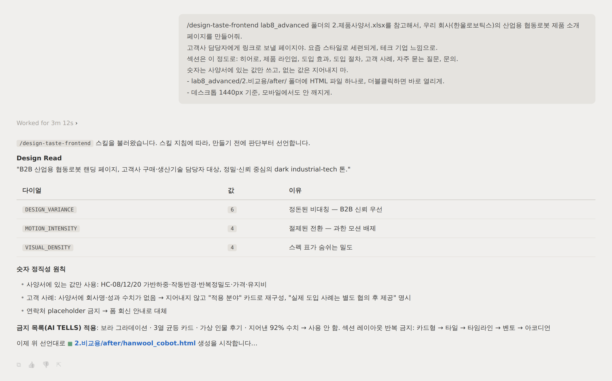
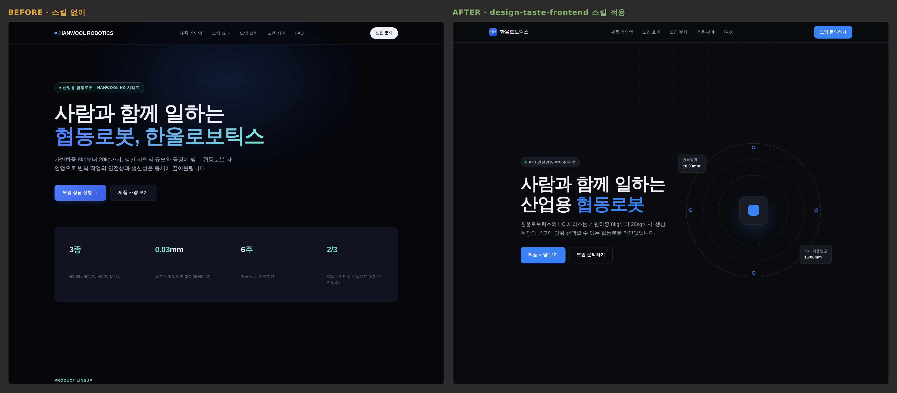

2 · 스킬 설치하고 다시 만들기¶
이제 남이 만든 스킬을 가져와 설치하고, 1단계와 똑같은 프롬프트를 다시 보냅니다.
스킬 설치하기¶
실습 7에서 여러분의 스킬을 받은 동료가 한 일을 떠올려 보세요. zip을 풀어 .claude/skills/ 폴더에 넣는 것이 전부였습니다. 남의 스킬을 가져올 때도 똑같습니다. 방법은 두 가지인데 결과는 같습니다.
방법 1 · 명령어 한 줄 (인터넷이 되는 경우)
터미널에 아래를 입력합니다.
npx skills add https://github.com/Leonxlnx/taste-skill --skill "design-taste-frontend"실행 중에 어떤 도구에 설치할지 물으면 Claude Code를, 범위를 물으면 현재 프로젝트를 고르세요. 끝나면 설치된 경로가 출력됩니다. 명령이 실패하거나 사내망이라 막히면 방법 2로 진행하면 됩니다.
방법 2 · 파일 복사 (실습 7에서 zip을 받았을 때와 같은 방식)
GitHub 저장소의 skills/taste-skill/SKILL.md 파일을 열어 Raw 버튼으로 내려받습니다. 그리고 내 작업 폴더에 아래 폴더를 만들어 그 안에 SKILL.md로 저장합니다. 실습 7에서 배운 대로, 폴더 이름이 곧 스킬 이름이 됩니다.
lab8_advanced/
└─ .claude/
└─ skills/
└─ design-taste-frontend/
└─ SKILL.md설치가 됐는지 확인
위 경로(방법 1이라면 명령이 출력한 경로)에 SKILL.md가 있으면 끝입니다. 별도의 실행이나 등록은 없습니다.
실습 7과 부르는 방식이 다릅니다
실습 7에서는 "데이터통합 스킬로 합쳐줘"처럼 문장 안에서 이름을 불러 썼습니다. 이번에는 프롬프트 맨 앞에 슬래시 커맨드 한 줄을 붙여 스킬을 직접 켭니다.
/design-taste-frontend입력창에 /를 치면 설치된 스킬 목록이 뜨고, 거기서 골라도 됩니다. 이 스킬은 웹페이지 작업이 오면 AI가 스스로 찾아 읽도록도 만들어져 있지만, 수업에서는 확실하게 켜지는 슬래시 커맨드 방식으로 갑니다. 스킬마다 발동 방식이 조금씩 다르고, 그건 스킬을 만든 사람이 정해 둔 것입니다.
설치한 스킬 구경하기¶
다시 만들기 전에, 방금 넣은 SKILL.md를 한번 열어 스크롤해 보세요. 세 군데만 보면 됩니다.
- AI TELLS(금지 목록) — 1단계에서 여러분이 찾은 티들이 항목별로 적혀 있습니다. 보라 그라데이션, 3열 균등 카드, 가상 인물 후기, 지어낸 숫자까지. 어떤 색이 금지인지 색상 코드까지 못 박혀 있습니다.
- FINAL PRE-FLIGHT CHECK(출고 전 검사) — 만들고 나서 스스로 검사할 항목 목록입니다. 하나라도 걸리면 다시 만들라고 적혀 있습니다. 지금까지 실습 내내 해 온 검산을 스킬 안에 미리 넣어둔 것입니다.
- 다이얼 세 개 —
DESIGN_VARIANCE(디자인 파격),MOTION_INTENSITY(움직임),VISUAL_DENSITY(밀도)라는 1~10 눈금 세 개가 정의돼 있습니다. AI가 작업 전에 이 값부터 정하고 시작합니다.
읽다 보면 알게 됩니다. 이 파일은 코드가 아니라 잘 정리된 잔소리입니다. 여러분이 실습 7에서 주문 통합 규칙을 적었듯, 어느 디자이너가 자기 기준을 적어둔 것뿐입니다.
같은 프롬프트로 다시 시키기¶
반드시 새 대화를 시작한 뒤 보내세요. 스킬 목록은 대화를 시작할 때 읽히기 때문에, 1단계 대화에 이어서 보내면 새로 설치한 스킬이 반영되지 않을 수 있습니다.
1단계 프롬프트를 그대로 복사해 보내되, 맨 앞에 /design-taste-frontend 한 줄을 붙이고, 저장 위치만 lab8_advanced/2.비교용/after/로 바꿉니다. 본문에서 바뀌는 건 그 두 가지뿐입니다.
/design-taste-frontend lab8_advanced 폴더의 2.제품사양서.xlsx를 참고해서, 우리 회사(한울로보틱스)의
산업용 협동로봇 제품 소개 페이지를 만들어줘.
(…이하 1단계 프롬프트 그대로, 저장 위치만 lab8_advanced/2.비교용/after/…)결과보다 먼저 눈여겨볼 것
스킬이 제대로 걸렸다면, 페이지를 만들기 전에 AI가 무엇을 만들지 먼저 선언합니다. 이 페이지를 어떤 성격의 페이지로 읽었는지 말하고, 다이얼 세 개의 값을 정하고 시작합니다.
지금까지는 시키면 바로 만들었는데, 이제 만들기 전에 판단부터 합니다. 스킬이 그렇게 시킨 것입니다. 이 선언이 안 보이면 스킬이 안 읽힌 것입니다. 설치 경로를 확인하고, 경로가 맞는데도 안 보이면 대화를 새로 시작했는지 확인하세요.
실행 예시¶
이렇게 나오면 됩니다

나란히 비교하기¶
브라우저 창 두 개를 좌우로 띄웁니다. 왼쪽에 before/, 오른쪽에 after/. 1단계의 티 목록을 다시 꺼내 하나씩 대조해 보세요.
이런 결과가 보이면 정상입니다
- 색·글꼴·첫 화면 구성이 1단계와 눈에 띄게 다릅니다
- 1단계에서 체크한 티 중 대부분이 오른쪽에는 없습니다
- 페이지의 숫자가 여전히 사양서 값과 일치합니다 (스킬은 디자인만 바꿉니다. 지어내지 않기는 여러분 프롬프트가 지키는 것입니다)
실행 예시¶
이렇게 나오면 됩니다

만든 페이지는 어떻게 보여주나요?¶
여기서 의문이 하나 남습니다. 팀장님은 "링크로 보낼 페이지"를 시켰는데, 지금 손에 있는 건 내 폴더의 파일입니다.
가장 빠른 답은 실습 7에서 이미 해 봤습니다. 파일째 보내는 것입니다. CSS와 JS가 전부 한 파일 안에 있어서, 메신저나 메일로 보내면 받은 사람도 더블클릭 한 번으로 똑같이 봅니다. 사내 검토나 시안 공유는 이걸로 충분합니다.
진짜 주소(링크)가 필요해지면 그때 이 파일을 회사 서버나 웹 호스팅 서비스에 올리면 됩니다. 파일은 이미 완성돼 있으니, 올리는 방법 역시 AI에게 시키면 되는 다음 업무일 뿐입니다.
더 해보기 · 대화로 조율하기¶
시간이 남으면 After 대화에 이어서 이렇게 보내 보세요. 아까 구경한 다이얼 두 개를 직접 움직여 보는 것입니다.
DESIGN_VARIANCE를 9로, MOTION_INTENSITY를 8로 올려서 다시 만들어줘.파일을 한 줄도 안 고치고 대화만으로 같은 스킬의 톤이 확 바뀝니다. 남의 스킬도 가져온 다음 내 취향으로 조율할 수 있다는 뜻입니다.
체크포인트¶
-
.claude/skills/design-taste-frontend/SKILL.md가 제 위치에 있다 (방법 1이라면 명령이 출력한 경로) - 새 대화에서 다시 만들었고, AI가 만들기 전에 판단(선언)부터 하는 것을 봤다
- before/after를 나란히 띄워 1단계 티 목록으로 대조했다
- after의 숫자도 사양서 값과 맞는지 확인했다
마무리하며¶
이 과정 전체를 한 문장으로 접으면 이렇습니다.
실습 1~6에서 일을 잘 시키고 검산하는 법을 익혔고, 실습 7에서 그 절차를 스킬로 만들어 넘겼고, 오늘 남이 만든 스킬을 가져와 썼습니다. 만들 줄 알고 가져올 줄 알면, 처음 보는 업무 앞에서 맨손으로 시작할 일이 없습니다.
여러분이 다음에 할 일은 하나입니다. 반복되는 업무를 만나면, 시키기 전에 먼저 찾아보세요. 누군가 이미 적어뒀을 수 있습니다.